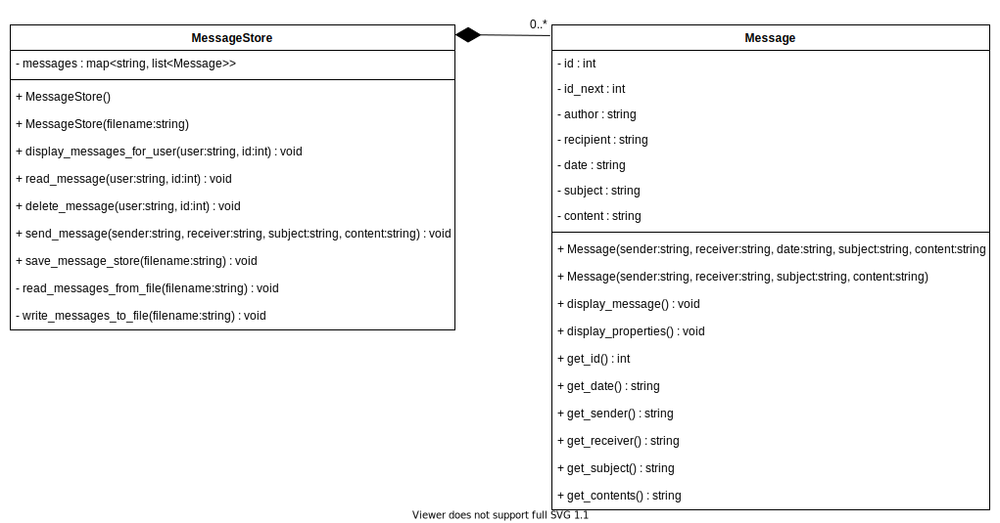

Week 4 Ponder and Prove: C++ Containers
Overview
Task: Create a simple messaging system
Purpose: Learn to use the C++ map and list containers
Instructions
Scenario: Your company is working on a top secret project and the CEO is concerned about industrial espionage. In order to prevent competitors from spying on communications between employees, the executive management team has just created a new company policy that the use of any messaging, email, text, chat, or other communication apps is banned for all communication between employees. The company will create its own messaging app for all internal communication between employees.
Your boss has just assigned you the task of creating a program that allows employees to send and receive simple text-based messages within the company. The boss has provided you with the following sample mockups of the program, along with the two class diagrams shown below. In addition, your team lead has created the class declarations, along with some code that will retrieve messages from a file and write messages to a file. You have also been provided with a file containing sample messages that you can use to test the application.
Your task is to finish each class by creating the class definitions for the Message and MessageStore classes, then to write a driver program that will use these classes to complete the app so it works according to the sample mockups.
Before you begin, your team lead has given you the following advice:
- Start familiarizing yourself with C++ documentation. cppreference.com is a great place to start.
- Use a std::map and std::list for this task.
Sample program output (mockups)
This is an example run of the completed program. User input is underlined
Enter user name ('quit' to exit): bob
Welcome, bob
Choose an option:
d - Display all messages
r - Read a message
x - Delete a message
s - Send a message
q - Exit user
bob> d
[2] Message from alice at 1/1/2020 - Subject: Hello
[3] Message from carol at 1/1/2020 - Subject: Secret Project
Choose an option:
d - Display all messages
r - Read a message
x - Delete a message
s - Send a message
q - Exit user
bob> r
Enter message id: 2
Message ID: 2
Date: 1/1/2020
From: alice
Subject: Hello
Message:
Hi Bob, How are you? I haven't talked to you for a while.
----------------------
Choose an option:
d - Display all messages
r - Read a message
x - Delete a message
s - Send a message
q - Exit user
bob> s
Who are you sending to? alice
What is the subject? Doing fine
What is the message? Hi Alice, I'm doing great.
Choose an option:
d - Display all messages
r - Read a message
x - Delete a message
s - Send a message
q - Exit user
bob> x
Enter message id: 2
Choose an option:
d - Display all messages
r - Read a message
x - Delete a message
s - Send a message
q - Exit user
bob> d
[3] Message from carol at 1/1/2020 - Subject: Secret Project
Choose an option:
d - Display all messages
r - Read a message
x - Delete a message
s - Send a message
q - Exit user
bob> q
Goodbye bob.
Enter user name ('quit' to exit): alice
Welcome, alice
Choose an option:
d - Display all messages
r - Read a message
x - Delete a message
s - Send a message
q - Exit user
alice> q
Goodbye alice.
Enter user name ('quit' to exit): quit
Goodbye.
UML Class Diagrams
Message class declaration
// message.h
//
// Represents a single message from a sender (author)
// to a receiver (recipient), along with the message id,
// date, subject, and content
//
#ifndef message_h // prevents the header from being imported multiple times
#define message_h
#include <string>
using namespace std;
class Message {
public:
// The typical constructor for a message
Message(const string& sender, const string& receiver, const string& subject,
const string& content);
// Constructor used to create a message with a specific date.
Message(const string& sender, const string& receiver, const string& date,
const string& subject, const string& content);
// Get a message id
int get_id() const;
// Display the contents of the message
void display_message() const;
// Display the properties of the message excluding its content in this format
// [id] Message from sender at date - Subject: subject
//
// Example:
// [1] Message from Karen at 11/1/2020 - Subject: Good afternoon
void display_properties() const;
// Get individual message properties
string get_sender() const { return author; }
string get_receiver() const { return recipient; }
string get_date() const { return date; }
string get_subject() const { return subject; }
string get_contents() const { return content; }
private:
int id;
static int id_next; // Incremented to generate the id for each new message
string author;
string recipient;
string date;
string subject;
string content;
};
#endif // message_h
MessageStore class declaration
// message_store.h
//
// Stores a collection of messages and provides a way to
// send, read, and delete a message.
//
// prevents the header from being imported multiple times
#ifndef message_store_h
#define message_store_h
#include <fstream> // ifstream, ofstream
#include <list>
#include <map>
#include <string>
#include "message.h"
using namespace std;
class MessageStore
{
public:
// Default constructor to create an empty message store
MessageStore() = default;
// Constructor that reads a file to populate messages
MessageStore(const string& filename);
// Display all the messages for a given user
void display_messages_for_user(const string& user) const;
// Display a single message
void read_message(const string& user, int msg_id) const;
// Delete a single message
void delete_message(const string& user, int msg_id);
// Send a message from sender to receiver
void send_message(const string& sender, const string& receiver,
const string& subject, const string& content);
// Save all messages to a file
void save_message_store(const string& filename);
private:
// store usernames mapped to a list of messages
map<string, list<Message>> messages;
// read messages in from a file
void read_messages_from_file(const string& filename);
// write messages to a file
void write_messages_to_file(const string& filename);
};
#endif // message_store_h
read_messages_from_file function
void MessageStore::read_messages_from_file(const string& filename)
{
ifstream fin(filename); // open the file
if (fin.fail()) {
cout << "Error, unable to open file " << filename << endl;
return;
}
while (!fin.fail()) {
string sender;
string receiver;
string date;
string subject;
string content;
getline(fin, sender, '|');
getline(fin, receiver, '|');
getline(fin, date, '|');
getline(fin, subject, '|');
getline(fin, content, '\n');
if (!fin.fail()) {
Message message(sender, receiver, date, subject, content);
messages[receiver].push_back(message);
}
}
fin.close();
}
write_messages_to_file function
void MessageStore::write_messages_to_file(const string& filename)
{
// open a file for writing
ofstream fout(filename);
if (fout.fail()) {
cout << "Unable to write to " << filename << endl;
return;
}
for (auto& each : messages) {
for (auto& message : each.second) {
fout << message.get_sender() << "|"
<< message.get_receiver() << "|"
<< message.get_date() << "|"
<< message.get_subject() << "|"
<< message.get_contents() << endl;
}
}
fout.close();
}
Sample message file
Use this sample file of stored messages to test your code: Sample Messages File
Thinking about Security
The way it is currently written, the messaging application does not require a password for a user to access their messages. This has several obvious security implications. Anyone could log on to the system and view the messages sent to someone else, which would be a potential breach of confidentiality. Anyone could log on to the system and send a message by posing as someone they are not. What if someone logged in with your name and sent a nasty message to your boss?
Stretch challenge
As a stretch challenge, modify the existing application to require a password when a user accesses the system.
Review
After completing the instructions:
- Review one of the many possible solutions for this task,
- Compare and contrast your code with the possible solution's code, and
- Make note of any improvements you could make for future tasks.